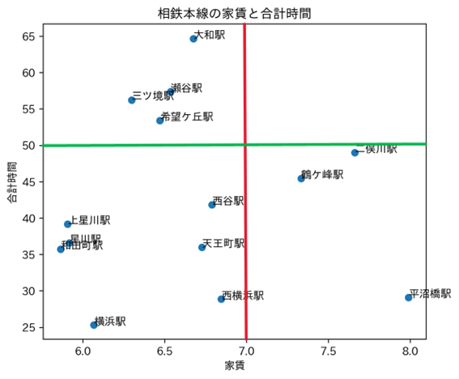

第６回課題
相鉄線でもっとも住みやすい駅
相鉄線は私が通学で毎日利用している駅です
実家暮らしなので気にした事ありませんでしたが、家賃とみなとみらいまでの距離の観点で見た場合どこの駅が一番住みやすいといえるのか気になりました
また、一人暮らしをする新大学生を対象としたいため、家賃を特に重要視します。
参考にするグラフ

結果
グラフを参考にした結果、最も住みやすい駅の候補として、上星川・星川・和田町が上がります。
どれもグラフ上は非常に僅差でありますが、上星川・和田町は各停横浜生きのみ停車、星川のみ快速横浜行きも停車することから、上記のグラフを参考にすると最も住みやすい駅は
星川であると言えます